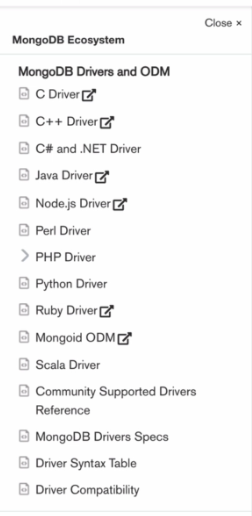

MongoDb's Driver Method with Node.js

There are a lot of drivers out there and this will enable our node js to utilize the database. The first step we need to do is to initialize our driver by creating a new package.json to our app using command:
npm init -y
-y will say yes to every default options. Then now we can install the external package driver by saying
npm i mongodb
npm install mongodb@4.5

Here are the code inside the app.js code

It starts by importing the module to work with database with mongoClient method for older node js version. Assert module is also not so, required for testing, validates our connection to the database. Mongo db connects with local host 27017, dbName will be our new database name. The we assign the client with our url and connects to the server. If all of that happen without any error, it loads "connected successfull". Then we will close the connection.
The newer version of mongo have atlas features

Which is a bit troubling.

THis syntax works on the latest version as of 2022.

This is used to connect with the Atlas server, dbName is the name of the database, I created the collection using databse variable then collection method specifying the name of document then storing it inside fruits for later use when inserting some data.

next is to specify the data to be inserted inside an array of objects. using await, we inserted the collection of fruits with insert many passing the variable containing the array. next is checking the success of passing the data.

We catch the exception here.
Basically, this is just a copy paste methodology with painful syntax, the better way to do this will less codes is through... guess what, a module called ODM or object document mapping which is called mongoose.